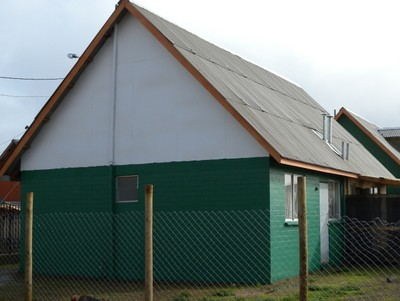
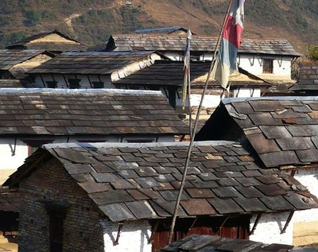

Inclinado con hastiales [RSH2]
El techo es inclinado (con pendiente) en dos lados a lo largo de un nervio central. En cada extremo del techo, i.e. hay un hastial. Un hastial es un muro triangular entre the las cuñas del techo.

Techo inclinado con hastiales (en color blanco), Chile (S. Brzev)

Techos inclinados, Nepal (M. Schildkamp)